Linux操作系统
第一章 Linux 入门
学习目标
1 熟悉Linux是什么
2 熟悉Linux的优势
3 可以比较Linux和Windows
4 了解Linux的常见版本
第一节 Linux是什么
Linux内核最初只是由芬兰人林纳斯 · 托瓦兹（LinusTorvalds）在赫尔辛基大学上学时出于个人爱好而编写的。
Linux是一套免费使用和自由传播的类Unix操作系统，是一个基于POSIX和UNIX的多用户、多任务、支持多线
程和多CPU的操作系统。Linux能运行主要的UNIX工具软件、应用程序和网络协议。它支持 32 位和 64 位硬件。Linux继承了Unix以网络为核心的设计思想，是一个性能稳定的多用户网络操作系统。。
第二节 Linux的优势
Linux系统的优势主要体现在服务器端应用方面，在PC端还是Windows系统对用户操作体验和应用程序的支持
更好。具体体现是：
性能强劲，安全稳定
Linux本来就是基于Unix概念而发展出来的操作系统，当然也继承了Unix稳定高效的特点。使用Linux系统的
主机连续工作 1 年以上不死机、不重启是非常常见的。所以很多电影、动画中的特效制作这样需要强大运算能力的工作都是运行在Linux系统之上。可定制
如果你对Linux足够了解，完全可以使用Linux内核搭配需要的组件构成一个定制版系统，甚至你可以修改Linux源码进行深度定制免费或少许费用学习Linux可以免费使用Linux的各种发行版，在商业用途中往往也只是支付很少的费用即可硬件配置要求低
Linux内核只有几KB大小，仅运行内核的话需要的系统开销很小，以命令行方式操作Linux也一样。以图形化
界面方式运行Linux需要的资源也比Windows更少。
- 嵌入移动设备
由于Linux只需要很少的资源就能够驱动所有硬件设备工作，所以非常适合嵌入到手机等移动设备中，例如现
在我们使用的Android系统就是以Linux为核心的。
第三节 Linux和Windows比较
第四节 Linux的常见版本
严格来讲，Linux这个词本身只表示Linux内核，但实际上人们已经习惯了用Linux来形容整个基于Linux内核。各不同版本Linux，都是基于相同的内核版本，只是用的内核版本可能有高有低，同时各厂家自己加了自己有特点的工具，还有某些文件位置不一样，不同版本的Linux相同度可以达90%

RedHat家族
Redhat企业版： 这个需要授权费，主要用在高要求的服务器商用系统
CentOS：CentOS全名为“社区企业操作系统”，CentOS社区将Red hat的网站上的所有源代码下载下来，进行重新编译。初学Linux通常会选择CentOS，这其实是RedHat收费后去掉收费功能而发布的一个免费的社区版
Fedara：被红帽公司定位为新技术的实验场地，许多新的技术都会在 FC 中检验
其他 ：Scientific Linux 、Oracle Linux
Debian 家族
Debian：运行起来极其稳定，这使得它非常适合用于服务器，Debian这款操作系统无疑并不适合新手用户，而是适合系统管理员和高级用户。
Ubuntu：Debian的一款衍生版，也是当今最受欢迎的免费操作系统,是一个以桌面应用为主的Linux操作系统
其他基于Debian的版本有：Linux Mint、Knoppix、MEPIS、sidux、CrunchBang Linux、Chromium OS、Google Chrome OS
SUSE家族
SUSE：是欧洲大陆最流行的LINUX起源于德国，于2003年末被Novell收购
SUSE Linux ：针对个人用户，可以免费下载
SUSE Linux Enterprise Server
SUSE Linux Enterprise Desktop
SUSE Manager
SUSE Studio
Gentoo家族
Gentoo：是Linux世界最年轻的发行版本，正因为年轻，所以能吸取在她之前的所有发行版本的优点
Gentoo Linux
Sabayon Linux
Calculate Linux
Funtoo Linux
第二章 VMware的使用
学习目标
1 熟悉VMware软件的作用
2 可以熟练安装VMware软件
3 可以熟练使用VMware创建虚拟计算机
4 可以熟练为虚拟计算机安装Linux操作系统
5 能独立解决安装过程中的常见问题
第一节 VMware的作用
VMware软件的作用

第一步，在Windows上安装VMware软件
第二步，使用VM软件创建虚拟的计算机
第三步，在虚拟的计算机上安装Linux操作系统
第二节 VMware的安装
安装前，先检查BIOS中是否开启了虚拟化支持
- 打开任务管理器，查看性能，CPU部分，虚拟化处于“已启用”状态

- 如果没有开启，则需要进入BIOS系统，将 Virtualization Technology 改为Enalble，不同品牌的电脑进入BIOS的方式都不同，可以根据电脑品牌型号搜索对应的进入方式

第一步：下载VMware安装包(https://www.vmware.com/cn/products/workstation-pro/workstation-pro-evaluation.html)，双击开始安装

第二步：点击下一步

第三步：同意协议，然后下一步

第四步：修改安装位置 勾选“添加到系统PATH”

第五步: 不检查更新，不参与客户体验提升计划

第六步：勾选“桌面”和“开始菜单程序文件夹”
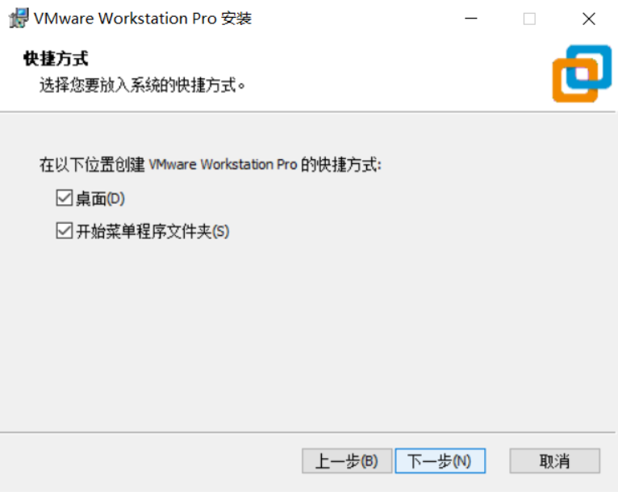
第七步：开始安装
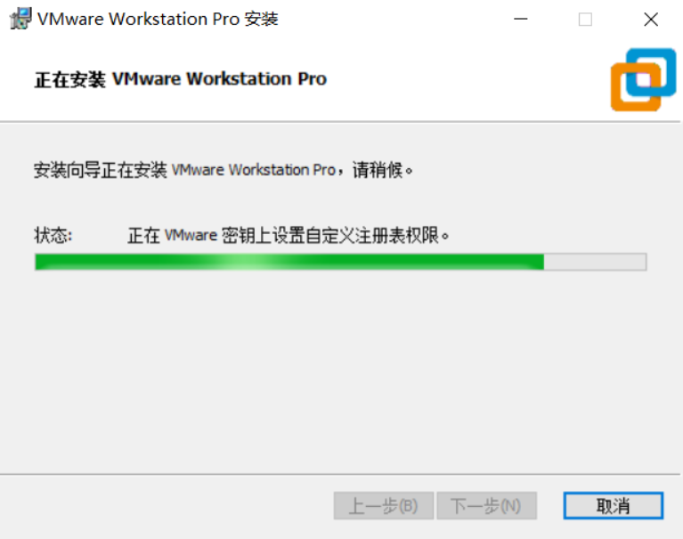
第八步：安装完成
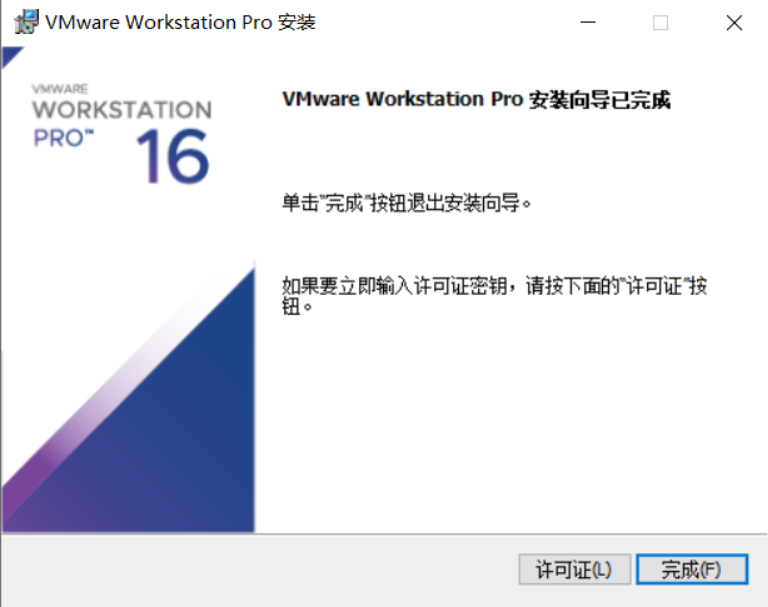
第九步：点击桌面图标启动程序
第十步：购买软件后，获取许可证密钥，输入密钥即可正常使用


第三节 VMware 创建虚拟机
第一步：选择创建新的虚拟计算机

第二步：选择自定义

第三步： 硬件兼容选择 Workstation **.x
第四步：选择稍后安装操作系统
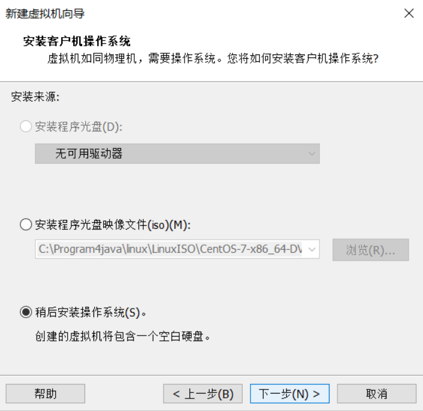
第五步：预选将来要安装的操作系统和版本

第六步：自定义虚拟机名称和虚拟机的存储位置

第七步：设置虚拟计算机的CPU 数量，不要高于宿主机的实际

第八步：设置虚拟计算机内存，2G即可
第九步：设置虚拟计算机初始网络连接方式，建议使用NAT模式

第十步：选择I/O控制器类型，默认推荐即可
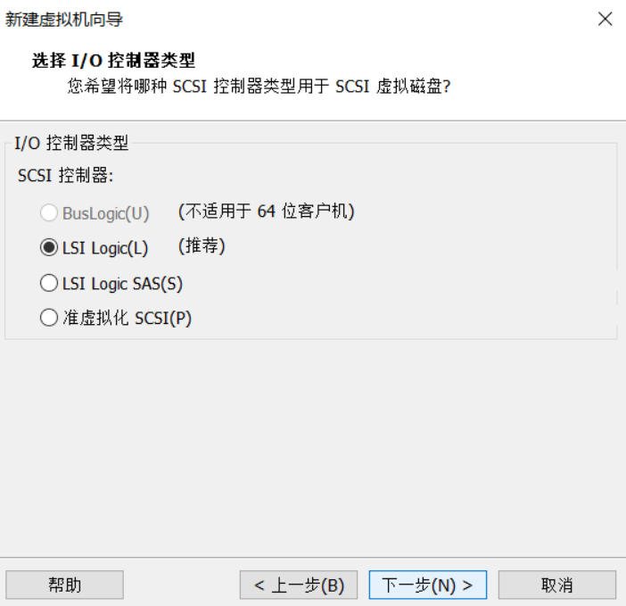
第十一步：选择磁盘类型，默认推荐即可

第十二步：选择创建新的虚拟磁盘
第十三步：设定虚拟磁盘大小，并拆分成多个文件
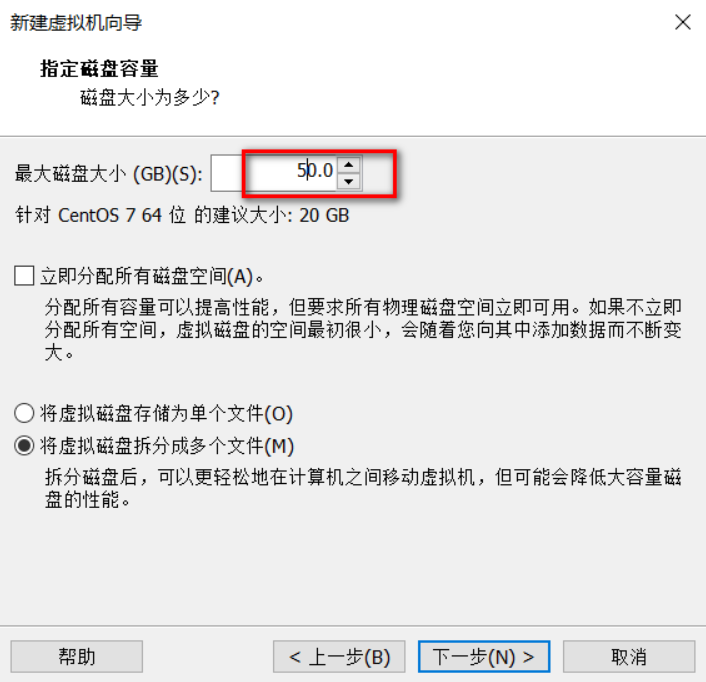
第十四步：检查虚拟磁盘文件名，默认即可

第十五步：检查虚拟计算机设置的信息，然后点击完成
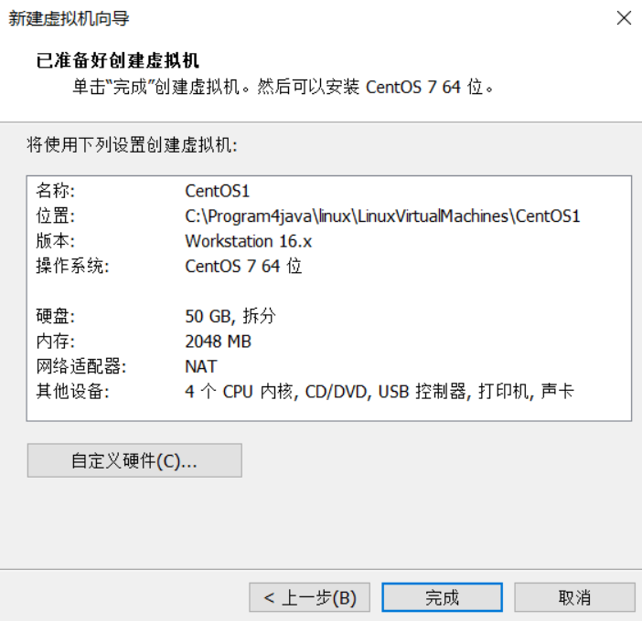
第十六步： 安装完成

第四节 VMware安装Linux
第一步：下载Linux的ISO镜像文件，这里选择的版本是Centos7 64位
网易镜像： |
下载好的镜像文件存于一个比较稳妥的目录下

第二步：选中对应的虚拟机然后点击虚拟机选项，找到设置

第二步：找到CD、DVD选项>使用IOS 镜像文件>浏览>选择的IOS镜像文件

第三步：开启虚拟机，开始对虚拟机特征进行设置

第四步：选择 Install Centos 7

第五步：选择安装过程中使用的提示语言

第六步：设置时区，时间和日期，与计算机日期一致即可


第七步：软件选择GNOME，带有图形界面模式的Linux 然后点击完成
当前为了学习安装带图形化界面，后续只需要“最小安装”即可


第八步：等待安装源和软件选择的支持检查
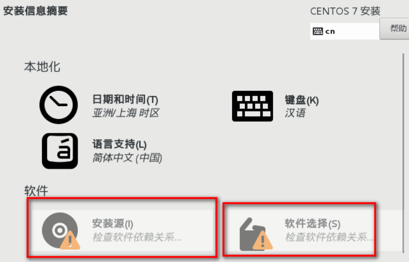
第九步： 设置安装位置，核对信息，然后点击完成即可


第十步： 设置网络和主机名，开启以太网，注意主机名和当前主机IP信息

第十一步： KDUMP崩溃存储机制，可以关闭
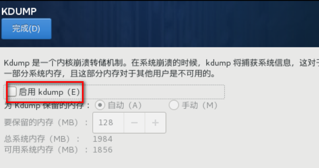
第十二步：开始安装

第十三步：设置超级管理员root用户的密码，配置完成，点击重启

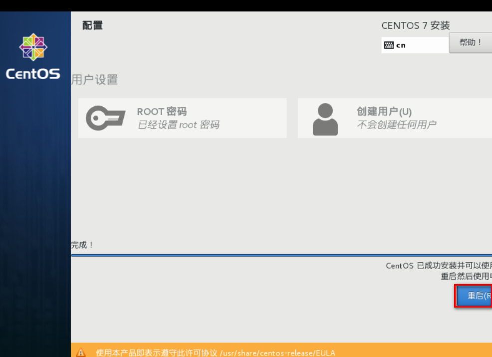
第十四步：重启后，选择第一项，开启虚拟机

第十五步：第一次进入虚拟机，需要接受许可
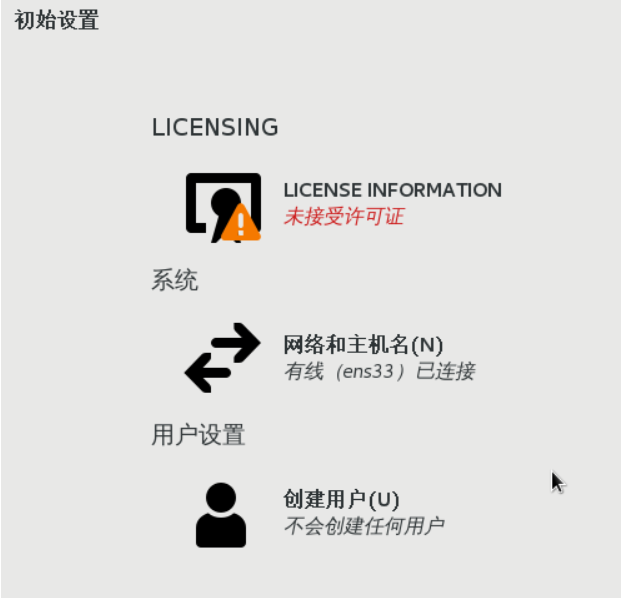

第十六步： 选择汉语，然后前进

第十七步：选择输入，汉语，然后前进

第十八步：位置服务，可以关闭，然后前进
第十九步：选择时区，已经设置过，然后前进

第二十步：在线账号创建，选择跳过

第二十一步：创建用于第一次登陆系统的普通用户账号，这里绝对不可以使用root作为用户名

第二十二步： 设置普通账户密码

第二十三步：进入系统后，点击关机按钮，找到用户，选择注销
第二十四步：点击未列出，输入超级管理员的账号密码，以超级管理员身份登录，前面的用户设置重复一遍后，即可进入系统


第二十五步：如果需要关机，一定要先将虚拟机关机或者挂起后，再关闭VMware，然后关闭windows

要想让鼠标从VMware的 虚拟中脱离出来，需要按快捷键 ctrl+alt
第五节 VMware常见问题
问题1
启动VM报0xc0000005，这是与vindows Hyper-V服务冲突造成的

1 关闭以下服务
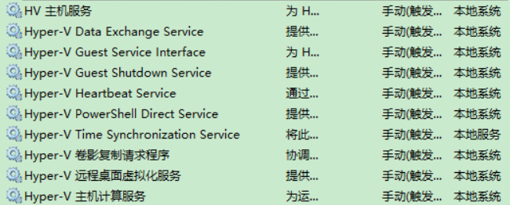
2 以管理员方式运行以下命令
bcdedit /set hypervisorlaunchtype off |
3 重启电脑
问题2
启动VMware蓝屏问题
1 打开控制面板，点击卸载程序

2 点击启用或者关闭Windows功能

3 勾选如下两个选项

问题3
如果采用问题2方式，运行一段时间后还是蓝屏，到官网下载最新版本安装
如果还是不行，可以考虑使用其他虚拟化软件，比如 VirtualBox
如果换软件还是出现问题，考虑重新安装Windows操作系统
第三章 Linux的目录结构
学习目标
1 熟悉Linux目录的组织习惯
2 熟悉一些Linux的常见目录及作用
第一节 Linux中的常见目录
Linux常见的目录结构，不同版本的Linux目录结构可能略有不同

Centos7的文件目录结构

Linux根目录下的常见目录及作用
1. /bin：★(/usr/bin,/usr/local/bin)
是Binary的缩写, 这个目录存放着最经常使用的命令,Linux默认的环境变量已经包含该路径,所以可以直接使用该路径下的指令如 cd指令
可以通过echo $PATH查看系统环境变量来看是否包含了该目录
2. /sbin：(/usr/sbin, /usr/local/sbin)
s就是Super User的意思，这里存放的是系统管理员使用的系统管理程序。
以上目录，任何命令在任意目录下都可执行命令
3. /home：★
存放普通用户的主目录，在Linux中每个用户都有一个自己的目录，一般该目录名是以用户的账号命名的。
4. /root：★
该目录为系统管理员，也称作超级权限者的用户主目录。
5. /lib：
系统开机所需要最基本的动态连接共享库，其作用类似于Windows里的DLL文件。几乎所有的应用程序都需要用到这些共享库。
6. /lost+found：
这个目录一般情况下是空的，当系统非法关机后，这里就存放了一些文件。
7. /etc：★
所有的系统管理所需要的配置文件和子目录。my.cnf
8. /usr：★
这是一个非常重要的目录，用户的很多应用程序和文件都放在这个目录下，类似与windows下的program files目录。
9. /boot：★
这里存放的是启动Linux时使用的一些核心文件，包括一些连接文件以及镜像文件，自己的安装别放这里
10. /proc：
这个目录是一个虚拟的目录，它是系统内存的映射，我们可以通过直接访问这个目录来获取系统信息。
11. /srv：
service缩写，该目录存放一些服务启动之后需要提取的数据。
12. /sys：
这是linux2.6内核的一个很大的变化。该目录下安装了2.6内核中新出现的一个文件系统 sysfs 。（内核）
13. /tmp：
这个目录是用来存放一些临时文件的。
14. /dev：★
Device(设备)的缩写,类似windows的设备管理器，把所有的硬件用文件的形式存储。
15. /media：★
linux系统会自动识别一些设备，例如U盘、光驱等等，当识别后，linux会把识别的设备挂载到这个目录下。CentOS6 就在/media下,CentOS7换目录了/

16. /mnt：★
系统提供该目录是为了让用户临时挂载别的文件系统的，我们可以将光驱挂载在/mnt/上，然后进入该目录就可以查看光驱里的内容了。
17. /opt：★
这是给主机额外安装软件所摆放的目录。
比如你安装JDK、Tomcat则就可以放到这个目录下。默认是空的。
18. /usr/local: ★
这是另一个给主机额外安装软件所摆放的目录.一般是通过编译源码方式安装的程序。
19. /var：★
这个目录中存放着在不断扩充着的东西，我们习惯将那些经常被修改的目录放在这个目录下。包括各种日志文件。
第四章 VI和VIM编辑器
学习目标
1 了解什么 是VI和VIM 编辑器
2 熟练VIM编辑器一般模式的常见操作
3 熟练VIM编辑器编辑模式的的进入和推出方式
4 熟练VIM编辑器命令模式的常见命令
第一节 什么是VI和VIM编辑器
vi是Unix和类Unix操作系统中出现的通用的文本编辑器。vim是从vi发展出来的一个性能更强大的文本编辑器,可以主动的以字体颜色辨别语法的正确性,方便程序设计,vim和vi编辑器完全兼容。使用：vi xxx文件 或者vim xxx文件,简单来说,就是用来编辑文件的一个工具,类似于我们再Windows上的一些文本编辑工具,只不过,这里是命令行形式的,不是图形用户界面形式的.接下来我们就准备一个文件,使用VIM对文件进行修改
复制一个系统的配置文件到Root目录下，用以练习vim命令
[root@192 ~]# cp /etc/smartmontools/smartd.conf /root |
Linux系统上没有文件后缀名这一概念
可以通过vim这个命令创建一个文本文件，并使用vim编辑器打开。
vim helloworld.mp3

第二节 VIM的一般模式
默认模式,在这个模式中， 你可以使用『上下左右』按键来移动光标，你可以使用『删除字符』或『删除整行』来处理档案内容， 也可以使用『复制、贴上』来处理你的文件数据。
1.删除和复制操作

2.光标移动操作

第三节 VIM的编辑模式
在一般模式中可以进行删除、复制、贴上等等的动作，但是却无法编辑文件内容的！要等到你按下『i, I, o, O, a, A, r, R』等任何一个字母之后才会进入编辑模式。注意了！通常在 Linux 中，按下这些按键时，在画面的左下方会出现『INSERT 或 REPLACE 』的字样，此时才可以进行编辑。而如果要回到一般模式时， 则必须要按下『Esc』这个按键即可退出编辑模式。

第四节 VIM的命令模式
可以进行存盘、退出、显示行号、搜索、批量替换等操作。要在一般模式下输入” / “或 “ : “ 或者”?”可进入命令模式,当命令执行前按esc或者命令执行完毕,自动回到一般模式

- 模式间的切换
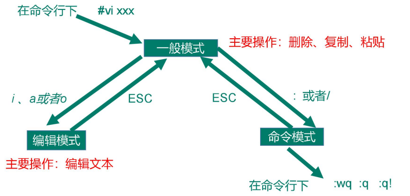
如果非正常退出,如使用ctrl+z退出,再次编辑会提示交换文件”. .swp”,文件存在,并给出相应的处理方式选项,如果不删除交换文件,每次编辑都会提示,这时可以删除交换文件,通过命令: rm -f ‘.swp’ 即可
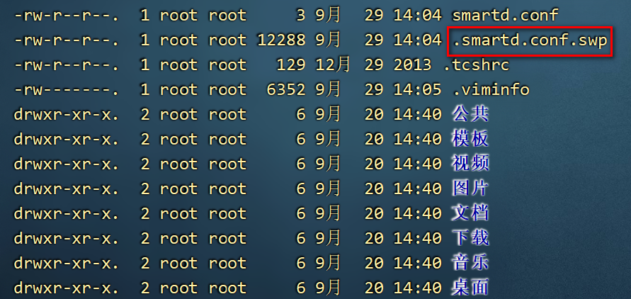

第五章 虚拟机网络配置
学习目标
1 熟练查看虚拟机网络配置信息
2 熟悉WMware的联网模式及特点
3 熟练在NAT模式下,将虚拟机IP设置为固定IP
4 熟练查看虚拟机主机名及配置主机名IP映射关系
5 熟练掌握Linux服务管理类命令
第一节 查看网络信息
通过ifconfig命令查看目前的网络信息

通过ping命令测试和某个IP之间是否相通

在VMware中查看当前虚拟机的联网模式
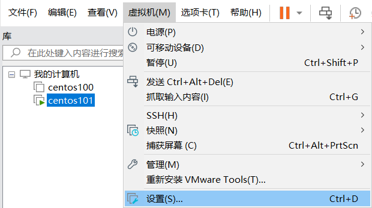
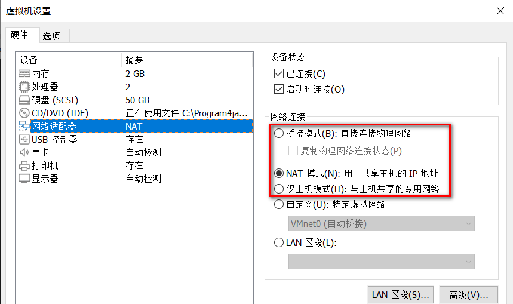
模式1 仅主机模式特点
特点
- 虚拟机只能和宿主机之间实现通信
缺点
- 只有宿主机和虚拟机之前能通信,虚拟机联网需要做更多的配置

模式2 桥接模式特点
特点
宿主机和虚拟机,都是由局域网路由(DHCP)进行IP的分配
宿主机和本地的虚拟机之间可以进行通信
局域网内其他机器也可以与虚拟机进行通信
简单
缺点
- 虚拟机会占用大量的IP,局域网内如果机器太多,或者虚拟机太多,那么会出现大量的IP冲突

模式3 NAT模式特点
特点
宿主机和其他机器的IP由局域网路由进行IP的分配,虚拟机的IP通过VMnet8虚拟交换机进行分配
宿主机和本地的虚拟机之间可以进行通信
不会占用宿主机所在路由IP,不会造成IP冲突
缺点
- 局域网内的机器无法与其他机器上的虚拟机进行通信


关于模式的选择
什么时候选择NAT模式?
在教室内,因为大量同学使用同一个路由,避免大量的IP冲突
我们在学习阶段,主要满足我们自己的计算机(宿主机)和本地虚拟机之间的通信以及虚拟机的联网
什么时候选择桥接模式?
- 自己独立的路由,想在局域网内实现虚拟机和其他计算机之间的通信
未来如何选择
未来这些问题会由运维人员来处理
未来我们使用的服务器不会在本地,使用远程服务器,自然也不需要我们来处理这种问题
第二节 修改网络配置信息
第一步: 打开VMware,打开虚拟网络编辑器

第二步: 选择NAT模式,对网段进行调整

第三步: 设置NAT模式的网关


第四步: 检查是否有漏选的选项

第五步: 修改虚拟机自己的网络模式选用模式为NAT
第六步: 修改虚拟机ens33网卡的网络配置信息
vim /etc/sysconfig/network-scripts/ifcfg-ens33 |
- ens33网络配置默认信息如下
TYPE="Ethernet" #网络类型（通常是Ethemet，工业以太网） |
- 以下选项,有则修改,无则增加
BOOTPROTO="static" #静态网址 (已有) |
第七步: 重启网络服务
systemctl restart network |
- 如果报错,则reboot重启虚拟机
第八步: 如果此时宿主机和虚拟机之前ping不通,可以配置windows的 VMnet8虚拟网卡


DNS配置：
与网关一样，可以上网
8.8.8.8 测试可能无法上网
114.114.114.114 测试可以上网
第九步: 如果网络服务还是不能启动,可能域NetWorkManager服务冲突,关闭该服务即可
查看服务systemctl status NetworkManager.service |
第三节 查看和修改主机名
查看主机名
hostname |

修改主机名
vim /etc/hostname |
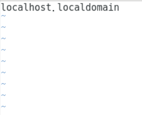

修改主机名和IP地址的映射关系
vim /etc/hosts |

- 保存退出后重启计算机
修改宿主机的主机名和IP地址映射关系
- windows上如果想通过centos100识别192.168.6.100 ,也需要秀修改hosts文件
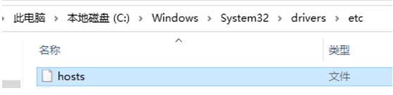
- 添加一行 192.168.6.100 centos100
第四节 服务管理类命令
临时开关服务命令
语法
centos6
service 服务名 start 开启服务
service 服务名 stop 关闭服务
service 服务名 restart 重启服务
service 服务名 status 查看服务状态
centos7
systemctl start 服务名 开启服务
systemctl stop 服务名 关闭服务
systemctl restart 服务名 重启服务
systemctl status 服务名 查看服务
systemctl –type service 查看正在运行的服务
实操
- 1 查看网络服务状态
systemctl status network.service
- 2 关闭服务
systemctl stop network.service
- 3 启动服务
systemctl start network.service
- 4 重启服务
systemctl restart network.service
- 查看所有服务
systemctl --type service
.service后缀可以省略不写
永久开关服务命令
语法
centos6
chkconfig 查看所有服务自启配置
chkconfig 服务名 off 关闭服务自启
chkconfig 服务名 on 开启服务自启
chkconfig 服务名 –list 查看服务开机启动状态
centos7
systemctl enable 服务名 打开自启
systemctl disable 服务名 关闭自启
systemctl is-enabled 服务名 查看服务是否自启
systemctl list-unit-files 查看所有服务自启配置
实操
- 1 关闭防火墙自动启动
systemctl status firewalld 查看防火墙
systemctl disable firewalld 关闭防火墙自启- 2 开启防火墙自启
systemctl enable firewalld
- 3 查看防火墙是否自启
systemctl is-enabled firewalld
Linux系统有7种运行级别(runlevel)：常用的是级别3和5(CentOS7中只有两个级别了：3和5)
运行级别0：系统停机状态，系统默认运行级别不能设为0，否则不能正常启动
运行级别1：单用户工作状态，root权限，用于系统维护，禁止远程登陆
运行级别2：多用户状态(没有NFS)，不支持网络
运行级别3：完全的多用户状态(有NFS)，登陆后进入控制台命令行模式
运行级别4：系统未使用，保留
运行级别5：X11控制台，登陆后进入图形GUI模式
运行级别6：系统正常关闭并重启，默认运行级别不能设为6，否则不能正常启动

第六章 虚拟机管理操作
学习目标
1 熟练掌握虚拟机快照的使用和管理
2 熟练掌握通过克隆方式创建虚拟机
第一节 VMware为虚拟机拍摄快照
通过快照可快速保存虚拟机当前的状态,后续可以使用快照,将虚拟机还原到某个快照的状态. 如某个软件安装失败,可以通过快照快速还原回指定的某个状态
- 选择指定的虚拟机拍摄快照

- 输入快照名称,添加快照描述

- 通过快照恢复虚拟机状态

- 管理和废弃快照

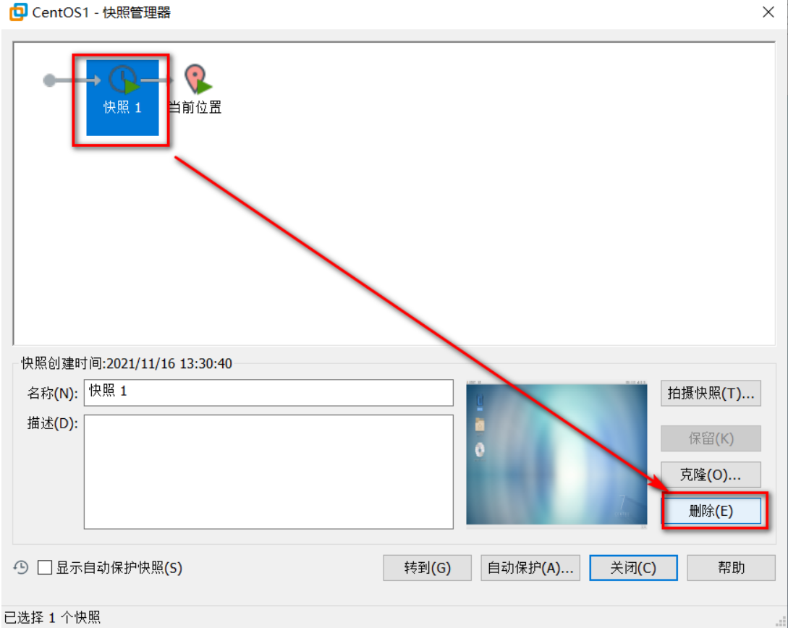
第二节 VMware为虚拟机执行克隆
第一步: 关闭要克隆的虚拟机
第二步: 选中虚拟机,右击>管理>克隆

第三步: 可以选择虚拟当前状态和某个快照状态进行克隆

第四步: 创建完整克隆

第五步: 注意修改克隆之后的虚拟机的名称和存放路径

第六步: 克隆完成,关闭即可

第七步: 修改克隆出来的虚拟机的主机名和IP配置,然后重启
第七章 远程工具的使用
学习目标
1 熟练安装和使用 WindTerm
第一节 WindTerm的安装和使用
Linux一般作为服务器使用,服务器一般都放在机房,不可能是你身边的Linux服务器,这时候我们需要一些工具来连接远程的Linux服务器来进行操作,WindTerm就是一种远程连接工具,其他Windows上常见的远程登录客户端有 SecureCRT, Xshell,SSHSecure Shell,等
Linux系统中是通过SSH服务 实现的远程登录功能,默认ssh服务的端口号是22
1.1 下载WindTerm
WindTerm 在GitHub的开源地址 ：https://github.com/kingToolbox/WindTerm
WindTerm 发布版本下载地址 ：https://github.com/kingToolbox/WindTerm/releases
WindTerm官网功能介绍：https://kingtoolbox.github.io/
（1）点击 发布版本下载地址，跳转到发布版本页面，找到当前最新版本下载

（2）下载windows版本
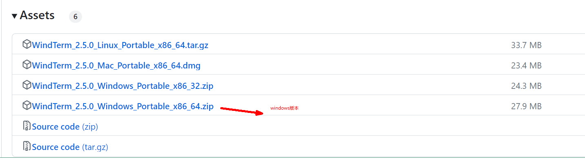
1.2 安装WindTerm
- 每个安装包都带有
Portable字样，表示免安装，该压缩包解压后即可使用。把下载后的压缩包放到电脑里的某个目录，解压后，双击WindTerm.exe就可以运行了。

1.3 使用WindTerm
（1）双击WindTerm.exe
第一次启动程序，会需要选择一个目录存储配置等个人资料，这个根据个人喜好选择即可。
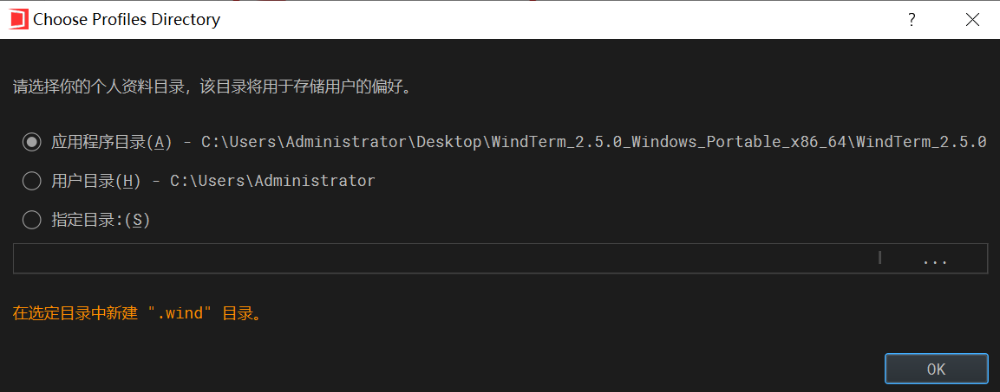
（2）进入软件页面后
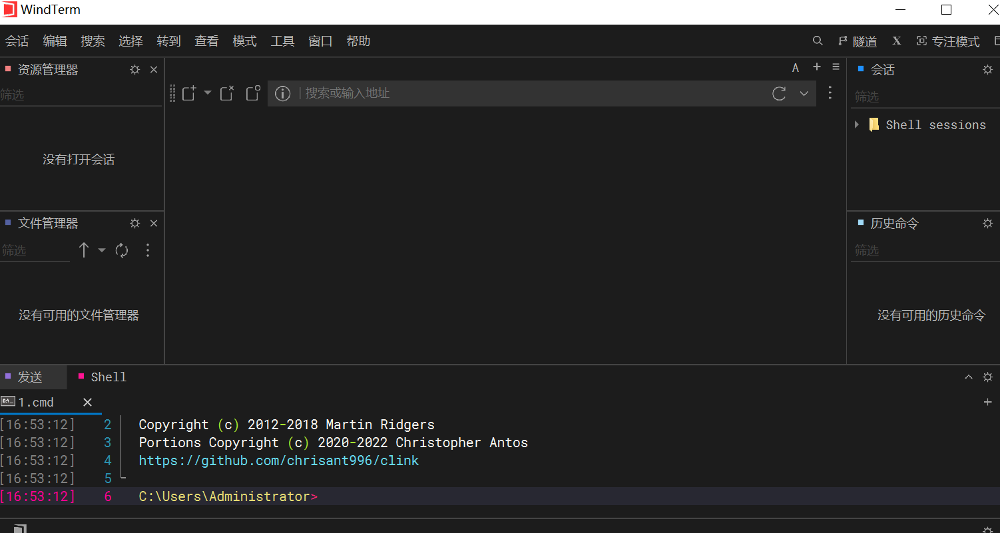
（3）新建会话

输入用户名：

输入密码：

连接效果：
（4）上传文件
进入文件管理器
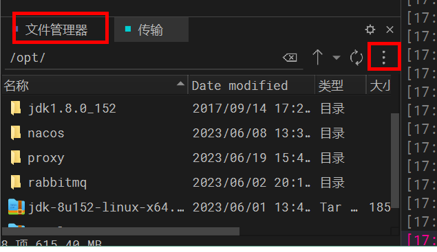
选择要上传的文件进行上传
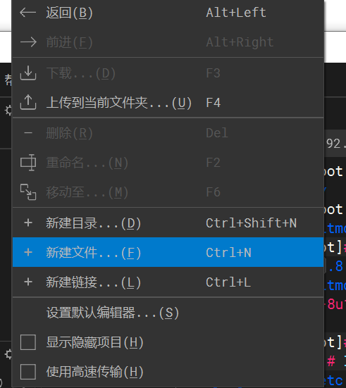

第八章 常见Linux命令
学习目标
1 熟练文件目录类命令
2 熟悉用户管理命令
3 熟悉组管理命令
4 熟练文件权限命令
5 熟悉搜索查找类命令
6 熟练压缩和解压缩命令
7 熟练进程线程类命令
8 了解磁盘分区类命令
第一节 文件目录类命令
（1）pwd打印当前目录的绝对路径
(print working directory )
基本语法
- pwd （功能描述：显示当前工作目录的绝对路径）
案例实操
- 显示当前工作目录的绝对路径
[root@hadoop101 ~]# pwd
/root
（2）ls(list) 列出目录内容
基本语法
- ls [选项] [目录或是文件]
选项说明
选项 功能 -a 全部的文件，连同隐藏档( 开头为 . 的文件) 一起列出来(常用) -l 长数据串列出，包含文件的属性与权限等等数据；(常用) 显示说明
每行列出的信息依次是： 文件类型与权限 链接数 文件属主 文件属组 文件大小用byte来表示 建立或最近修改的时间 名字
实操案例
- 查看当前目录的所有内容信息
[wzb@hadoop101 ~]$ ls -al
总用量 44
drwx------. 5 wzb wzb 4096 5月 27 15:15 .
drwxr-xr-x. 3 root root 4096 5月 27 14:03 ..
drwxrwxrwx. 2 root root 4096 5月 27 14:14 hello
-rwxrw-r--. 1 wzb wzb 34 5月 27 14:20 test.txt
（3）cd(Change Directory)切换路径
基本语法
- cd [参数]
参数说明
参数 功能 cd 绝对路径 切换路径 cd相对路径 切换路径 cd ~或者cd 回到自己的家目录 cd - 回到上一次所在目录 cd .. 回到当前目录的上一级目录 cd -P 跳转到实际物理路径，而非快捷方式路径 cd / 回到系统根目录 实操案例
- 使用绝对路径切换到root目录
[root@hadoop101 ~]# cd /root/
- 使用相对路径切换到“公共的”目录
[root@hadoop101 ~]# cd 公共的/
- 表示回到自己的家目录，亦即是 /root 这个目录
[root@hadoop101 公共的]# cd ~
- cd- 回到上一次所在目录
[root@hadoop101 ~]# cd -
- 表示回到当前目录的上一级目录，亦即是 “/root/公共的”的上一级目录的意思；
[root@hadoop101 公共的]# cd ..
（4）mkdir(Make directory) 建立目录
基本语法
- mkdir [选项] 要创建的目录
选项说明
选项 功能 -p 创建多层目录 实操案例
- 创建一个目录
[root@hadoop101 ~]# mkdir xiyou
[root@hadoop101 ~]# mkdir xiyou/mingjie- 创建一个多级目录
[root@hadoop101 ~]# mkdir -p xiyou/dssz/meihouwang
（5）rmdir(Remove directory) 删除目录
基本语法
- rmdir 要删除的空目录
实操案例
- 删除一个空的文件夹
[root@hadoop101 ~]# rmdir xiyou/dssz/meihouwang
（6）touch 创建空文件
基本语法
- touch 文件名称
实操案例
[root@hadoop101 ~]# touch xiyou/dssz/sunwukong.txt
注意事项
vim也可以创建文件,vim wzb.txt 进入编辑模式,然后输入内容保存退出即可,但是如果不输出内容直接空文件下退出,则不会创建文件
（7）cp 复制文件或目录
基本语法
- cp [选项] source dest （功能描述：复制source文件到dest）
选项说明
选项 功能 -r 递归复制整个文件夹 参数说明
参数 功能 source 源文件 dest 目标文件 实操案例
- 复制文件
[root@hadoop101 ~]# cp xiyou/dssz/suwukong.txt xiyou/mingjie/
- 递归复制整个文件夹
[root@hadoop101 ~]# cp -r a/b/ ./
（8）rm移除文件或者目录
基本语法
- rm [选项] deleteFile
选项说明
选项 功能 -r 递归删除目录所有内容 -f 强制删除,不提示用户进行确认 -v 显示指令的详细执行过程 实操案例
- 删除目录中的内容
[root@hadoop101 ~]# rm xiyou/mingjie/sunwukong.txt
- 递归删除目录中所有内容
[root@hadoop101 ~]# rm -rf dssz/
（9）mv移动文件与目录或重命名
基本语法
- 重命名
mv oldNameFile newNameFile
- 移动文件
mv /temp/movefile /targetFolder
实操案例
- 重命名
[root@hadoop101 ~]# mv xiyou/dssz/suwukong.txt xiyou/dssz/houge.txt
- 移动文件
[root@hadoop101 ~]# mv xiyou/dssz/houge.txt ./
（10）cat查看文件内容
基本语法
- cat [选项] 文件 查看文件内容,从第一行开始显示
选项说明
选项 功能描述 - n 显示所有行的行号,包括空行 经验技巧
一般查看比较小的文件,一屏幕能显示全的
实操案例
- 查看文件内容并显示行号
[wzb@hadoop101 ~]$ cat -n houge.txt
（11）more 文件分屏查看器
基本语法
more 要查看的文件
more指令是一个基于VI编辑器的文本过滤器，它以全屏幕的方式按页显示文本文件的内容。more指令中内置了若干快捷键，详见操作说明。
操作说明
操作 功能说明 空白键 (space) 代表向下翻一页； Enter 代表向下翻『一行』； q 代表立刻离开 more ，不再显示该文件内容。 Ctrl+F 向下滚动一屏 Ctrl+B 返回上一屏 = 输出当前行的行号 :f 输出文件名和当前行的行号 实操案例
- （1）采用more查看文件
[root@hadoop101 ~]# more smartd.conf
（12）less 分屏显示文件内容
基本语法
less指令用来分屏查看文件内容，它的功能与more指令类似，但是比more指令更加强大，支持各种显示终端。less指令在显示文件内容时，并不是一次将整个文件加载之后才显示，而是根据显示需要加载内容，对于显示大型文件具有较高的效率。
less 要查看的文件操作说明
操作 功能说明 空白键 向下翻动一页； [pagedown] 向下翻动一页 [pageup] 向上翻动一页； /字串 向下搜寻『字串』的功能；n：向下查找；N：向上查找； ?字串 向上搜寻『字串』的功能；n：向上查找；N：向下查找； q 离开 less 这个程序； 实操案例
- （1）采用less查看文件
[root@hadoop101 ~]# less smartd.conf
（13）head显示文件头部内容
基本语法
head用于显示文件的开头部分内容，默认情况下head指令显示文件的前10行内容。
head 文件 （功能描述：查看文件头10行内容）
head -n 5 文件 （功能描述：查看文件头5行内容，5可以是任意行数）选项说明
选项 功能 -n <行数> 指定显示头部内容的行数 实操案例
- （1）查看文件的头2行
[root@hadoop101 ~]# head -n 2 smartd.conf
（14）tail 输出文件尾部内容
基本语法
tail用于输出文件中尾部的内容，默认情况下tail指令显示文件的后10行内容。
（1）tail 文件 （功能描述：查看文件后10行内容）
（2）tail -n 5 文件 （功能描述：查看文件后5行内容，5可以是任意行数）
（3）tail -F 文件 （功能描述：实时追踪该文档的所有更新）选项说明
选项 功能 -n<行数> 输出文件尾部n行内容 -F 显示文件最新追加的内容，监视文件变化 实操案例
- （1）查看文件头1行内容
[root@hadoop101 ~]# tail -n 1 smartd.conf
- （2）实时追踪该档的所有更新
[root@hadoop101 ~]# tail -F houge.txt
（15）echo 打印信息
基本语法
echo输出内容到控制台 System.out.println();
echo [选项] [输出内容]选项说明
选项 功能 -e 支持反斜线控制的字符转换 控制字符 作用 \\ 输出\本身 \n 换行符 \t 制表符，也就是Tab键 实操案例
- (1) 打印文字信息
[wzb@hadoop101 ~]$ echo "hello\tworld"
hello\tworld
[wzb@hadoop101 ~]$ echo -e "hello\tworld"
hello world- (2) 打印环境变量
[wzb@hadoop101 ~]$ echo $PATH
（16）> 覆盖和>>追加
基本语法
（1）ll >文件 （功能描述：列表的内容写入文件a.txt中（**覆盖写**））
（2）ll >>文件 （功能描述：列表的内容**追加**到文件aa.txt的末尾）
（3）cat 文件1 > 文件2 （功能描述：将文件1的内容覆盖到文件2）
（4）echo “内容” >> 文件实操案例
- （1）将ls查看信息写入到文件中
[root@hadoop101 ~]# ls -l>houge.txt
- （2）将ls查看信息追加到文件中
[root@hadoop101 ~]# ls -l>>houge.txt
- （3）采用echo将hello单词追加到文件中
[root@hadoop101 ~]# echo hello>>houge.txt
（17）ln创建链接和软连接
基本语法
链接表示目标资源的另外的访问方式,表示一种路径
软链接也称为符号链接，类似于windows里的快捷方式，有自己的数据块，主要存放了链接其他文件的路径。
ln [-s] [原文件或目录] [链接名] （功能描述：给原文件创建一个链接）选项说明
选项 功能 -s 创建的链接为 软连接 经验技巧
删除软链接： rm -rf 软链接名，而不是rm -rf 软链接名/
查询：通过ll就可以查看，列表属性第1位是l，尾部会有位置指向。实操案例
- （1）创建软连接
[root@hadoop101 ~]# mv houge.txt xiyou/dssz/
[root@hadoop101 ~]# ln -s xiyou/dssz/houge.txt houzi
[root@hadoop101 ~]# ll
lrwxrwxrwx. 1 root root 20 6月 17 12:56 houzi -> xiyou/dssz/houge.txt- （2）删除软连接
[root@hadoop101 ~]# rm -rf houzi
- （3）进入软连接实际物理路径
[root@hadoop101 ~]# ln -s xiyou/dssz/ ./dssz
[root@hadoop101 ~]# cd -P dssz/
（18）history查看历史命令
基本语法
history （功能描述：查看已经执行过历史命令）
实操案例
- （1）查看已经执行过的历史命令
[root@hadoop101 test1]# history
- (2) /root/.bash_history文件中也是历史命令
less /root/.bash_history
第二节 用户管理命令
useradd添加新用户
基本语法
useradd 用户名 （功能描述：添加新用户）
useradd -g 组名 用户名 （功能描述：添加新用户到某个组）实操案例
- （1）添加一个用户
[root@hadoop101 ~]# useradd tangseng
[root@hadoop101 ~]#ll /home/
passwd设置用户密码
基本语法
passwd 用户名 （功能描述：设置用户密码）
实操案例
- （1）设置用户的密码
[root@hadoop101 ~]# passwd tangseng
id查看用户是否存在
基本语法
id 用户名
实操案例
- （1）查看用户是否存在
[root@hadoop101 ~]#id tangseng
cat /etc/passwd 查看创建的所有用户
实操案例
- (1) 查看创建的所有用户
[root@hadoop101 ~]# cat /etc/passwd
su(switch user )切换用户
基本语法
su 用户名称 （功能描述：切换用户，只能获得用户的执行权限，不能获得环境变量）
su - 用户名称 （功能描述：切换到用户并获得该用户的环境变量及执行权限）实操案例
- （1）切换用户
[root@hadoop101 ~]#su tangseng
[root@hadoop101 ~]#echo $PATH
/usr/lib64/qt-3.3/bin:/usr/local/sbin:/usr/local/bin:/sbin:/bin:/usr/sbin:/usr/bin:/root/bin
[root@hadoop101 ~]#exit
[root@hadoop101 ~]#su - tangseng
[root@hadoop101 ~]#echo $PATH
/usr/lib64/qt-3.3/bin:/usr/local/bin:/bin:/usr/bin:/usr/local/sbin:/usr/sbin:/sbin:/home/tangseng/bin- (2) exit 回退到上一个用户
[root@hadoop101 ~]#exit
userdel删除用户
基本语法
（1）userdel 用户名 （功能描述：删除用户但保存用户主目录）
（2）userdel -r 用户名 （功能描述：用户和用户主目录，都删除）选项说明
选项 功能 -r 删除用户的同时，删除与用户相关的所有文件。 实操案例
- （1）删除用户但保存用户主目录
[root@hadoop101 ~]#userdel tangseng
[root@hadoop101 ~]#ll /home/- （2）删除用户和用户主目录，都删除
[root@hadoop101 ~]#useradd zhubajie
[root@hadoop101 ~]#ll /home/
[root@hadoop101 ~]#userdel -r zhubajie
[root@hadoop101 ~]#ll /home/
who 查看登录用户信息
基本语法
（1）whoami （功能描述：显示自身用户名称）
（2）who am i （功能描述：显示登录用户的用户名）案例实操
- （1）显示自身用户名称
[root@hadoop101 opt]# whoami
- （2）显示登录用户的用户名
[root@hadoop101 opt]# who am i
sudo 设置普通用户具有root权限
基本语法
sudo 命令
实操案例
- (1) 添加wzb用户，并对其设置密码
[root@hadoop101 ~]#useradd wzb
[root@hadoop101 ~]#passwd wzb- (2)修改配置文件
[root@hadoop101 ~]#vi /etc/sudoers
修改 /etc/sudoers 文件，找到下面一行(91行)，在root下面添加一行，如下
\## Allow root to run any commands anywhere
root ALL=(ALL) ALL
wzb ALL=(ALL) ALL或者配置成采用sudo命令时，不需要输入密码
\## Allow root to run any commands anywhere
root ALL=(ALL) ALL
wzb ALL=(ALL) NOPASSWD:ALL
修改完毕，现在可以用wzb帐号登录，然后用命令 sudo ，即可获得root权限进行操作。- (3)用普通用户在/opt目录下创建一个文件夹
[wzb@hadoop101 opt]$ sudo mkdir module
usermod修改用户
基本语法
usermod -g 用户组 用户名
选项说明
选项 功能 -g 修改用户的初始登录组，给定的组必须存在 实操案例
- （1）将用户加入到用户组
[root@hadoop101 opt]#usermod -g root zhubajie
第三节 组管理类命令
每个用户都有一个用户组，系统可以对一个用户组中的所有用户进行集中管理。不同Linux 系统对用户组的规定有所不同，如Linux下的用户属于与它同名的用户组，这个用户组在创建用户时同时创建。用户组的管理涉及用户组的添加、删除和修改。组的增加、删除和修改实际上就是对/etc/group文件的更新。
groupadd新增组
基本语法
groupadd 组名
实操案例
- （1）添加一个xitianqujing组
[root@hadoop101 opt]#groupadd xitianqujing
groupdel删除组
基本语法
groupdel 组名
实操案例
- （1）删除xitianqujing组
[root@hadoop101 opt]# groupdel xitianqujing
查看创建了那些组
实操案例
[root@hadoop101 wzb]# cat /etc/group
第四节 文件权限类命令
文件属性信息解读
文件类型和权限的表示

（1） 0首位表示类型 在Linux中第一个字符代表这个文件是目录、文件或链接文件等等
符号 对应文件类型 - 代表文件 d d 代表目录 l 链接文档(link file)； （2）第1-3位确定属主（该文件的所有者）拥有该文件的权限。U →User
（3）第4-6位确定属组（所有者的同组用户）拥有该文件的权限，G→Group
（4）第7-9位确定其他用户拥有该文件的权限 , O →Other
rwx作用到目录和文件的不同含义
- 作用到文件
[ r ]代表可读(read): 可以读取，查看
[ w ]代表可写(write): 可以修改，但是不能删除该文件，对该文件所在的目录有写权限，才能删除.
[ x ]代表可执行(execute):可以被系统执行- 作用到目录
[ r ]代表可读(read): 可以读取，ls查看目录内容
[ w ]代表可写(write): 可以修改，目录内创建+删除+重命名目录
[ x ]代表可执行(execute):可以进入该目录实操案例
- (1)查看文件权限信息
[root@hadoop101 ~]# ll
总用量 104
-rw-------. 1 root root 1248 1月 8 17:36 anaconda-ks.cfg
drwxr-xr-x. 2 root root 4096 1月 12 14:02 dssz
lrwxrwxrwx. 1 root root 20 1月 12 14:32 houzi -> xiyou/dssz/houge.tx- (2)文件属性介绍
ls -l

** 如果查看到是文件：链接数指的是硬链接个数**
** 如果查看的是文件夹：链接数指的是子文件夹个数 **
chmod改变文件权限
基本语法

- 第一种方式变更权限
chmod [{ugoa}{+-=}{rwx}] 文件或目录
- 第二种方式变更权限
chmod [mode=421 ] [文件或目录]
经验技巧
u:所有者 g:所有组 o:其他人 a:所有人(u、g、o的总和)
r=4 w=2 x=1
rwx=4+2+1=7实操案例
- （1）修改文件使其所属主用户具有执行权限
[root@hadoop101 ~]# cp xiyou/dssz/houge.txt ./
[root@hadoop101 ~]# chmod u+x houge.txt- （2）修改文件使其所属组用户具有执行权限
[root@hadoop101 ~]# chmod g+x houge.txt
- （3）修改文件所属主用户执行权限,并使其他用户具有执行权限
[root@hadoop101 ~]# chmod u-x,o+x houge.txt
- （4）采用数字的方式，设置文件所有者、所属组、其他用户都具有可读可写可执行权限。
[root@hadoop101 ~]# chmod 777 houge.txt
- （5）修改整个文件夹里面的所有文件的所有者、所属组、其他用户都具有可读写执行权限。
[root@hadoop101 ~]# chmod -R 777 xiyou/
chown 改变所有者
基本语法
chown [选项] [最终用户] [文件或目录] （功能描述：改变文件或者目录的所有者）
选项说明
选项 功能 -R 递归操作 实操案例
- （1）修改文件所有者
[root@hadoop101 ~]# chown wzb houge.txt
[root@hadoop101 ~]# ls -al
-rwxrwxrwx. 1 wzb root 551 5月 23 13:02 houge.txt- （2）递归改变文件所有者和所有组
[root@hadoop101 xiyou]# ll
drwxrwxrwx. 2 root root 4096 9月 3 21:20 xiyou
[root@hadoop101 xiyou]# chown -R wzb:wzb xiyou/
[root@hadoop101 xiyou]# ll
drwxrwxrwx. 2 wzb wzb 4096 9月 3 21:20 xiyou
chgrp改变所属组
基本语法
chgrp [最终用户组] [文件或目录] （功能描述：改变文件或者目录的所属组）
实操案例
- （1）修改文件的所属组
[root@hadoop101 ~]# chgrp root houge.txt
[root@hadoop101 ~]# ls -al
-rwxrwxrwx. 1 wzb root 551 5月 23 13:02 houge.txt
第五节 搜索查找类命令
find 查找文件或者目录
基本语法
find指令将从指定目录向下递归地遍历其各个子目录，将满足条件的文件显示在终端。
find [搜索范围] [选项]
|
* （2）按拥有者：查找/opt目录下，用户名称为-user的文件
[root@hadoop101 ~]# find opt/ -user wzb
* （3）按文件大小：在/home目录下查找大于200m的文件（+n 大于 -n小于 n等于）
[root@hadoop101 ~]find /home -size +204800
grep 过滤查找及“|”管道符
基本语法
管道符，“|”，表示将前一个命令的处理结果输出传递给后面的命令处理
grep 选项 查找内容 源文件 select * from emp where ename like '%a%'选项说明
选项 功能 -n 显示匹配及行号 实操案例
- （1）查找某文件在第几行
[root@hadoop101 ~]# ls | grep -n test
第六节 压缩和解压缩命令
gzip/gunzip 压缩
基本语法
gzip 文件 （功能描述：压缩文件，只能将文件压缩为*.gz文件）
gunzip 文件.gz （功能描述：解压缩文件命令）经验技巧
（1）只能压缩文件,不能压缩目录
（2）不保留原来的文件实操案例
- （1）gzip压缩
[root@hadoop101 ~]# ls
houge.txt
[root@hadoop101 ~]# gzip houge.txt
[root@hadoop101 ~]# ls
houge.txt.gz- （2）gunzip解压缩文件
[root@hadoop101 ~]# gunzip houge.txt.gz
[root@hadoop101 ~]# ls
houge.txt
zip/unzip压缩
基本语法
zip [选项] XXX.zip 将要压缩的内容 （功能描述：压缩文件和目录的命令）
unzip [选项] XXX.zip （功能描述：解压缩文件）选项说明
zip选项 功能 -r 压缩目录 unzip选项 功能 -d<目录> 指定解压后文件的存放目录 经验技巧
zip 压缩命令在window/linux都通用，**可以压缩目录且保留源文件**。
实操案例
- （1）压缩 1.txt 和2.txt，压缩后的名称为mypackage.zip
[root@hadoop101 opt]# touch bailongma.txt
[root@hadoop101 ~]# zip houma.zip houge.txt bailongma.txt
adding: houge.txt (stored 0%)
adding: bailongma.txt (stored 0%)
[root@hadoop101 opt]# ls
houge.txt bailongma.txt houma.zip- （2）解压 mypackage.zip
[root@hadoop101 ~]# unzip houma.zip
Archive: houma.zip
extracting: houge.txt
extracting: bailongma.txt
[root@hadoop101 ~]# ls
houge.txt bailongma.txt houma.zip- （3）解压mypackage.zip到指定目录-d
[root@hadoop101 ~]# unzip houma.zip -d /opt
[root@hadoop101 ~]# ls /opt/
tar打包
基本语法
tar [选项] XXX.tar.gz 将要打包进去的内容 （功能描述：打包目录，压缩后的文件格式.tar.gz）
选项说明
选项 功能 -z 打包同时压缩 -c 产生.tar打包文件 -v 显示详细信息 -f 指定压缩后的文件名 -x 解包.tar文件 实操案例
- （1）压缩多个文件
[root@hadoop101 opt]# tar -zcvf houma.tar.gz houge.txt bailongma.txt
houge.txt
bailongma.txt
[root@hadoop101 opt]# ls
houma.tar.gz houge.txt bailongma.txt- （2）压缩目录
[root@hadoop101 ~]# tar -zcvf xiyou.tar.gz xiyou/
xiyou/
xiyou/mingjie/
xiyou/dssz/
xiyou/dssz/houge.txt- （3）解压到当前目录
[root@hadoop101 ~]# tar -zxvf houma.tar.gz
- （4）解压到指定目录
[root@hadoop101 ~]# tar -zxvf xiyou.tar.gz -C /opt
[root@hadoop101 ~]# ll /opt/
第七节 进程线程类命令
进程是正在执行的一个程序或命令，每一个进程都是一个运行的实体，都有自己的地址空间，并占用一定的系统资源。
ps (process status 进程状态)查看当前系统进程状态
基本语法
ps -aux | grep xxx （功能描述：查看系统中所有进程）
ps -ef | grep xxx （功能描述：可以查看子父进程之间的关系）选项说明
选项 功能 -a 选择所有进程 -u 显示所有用户的所有进程 -x 显示没有终端的进程 功能说明
- （1）ps -aux显示信息说明
USER：该进程是由哪个用户产生的
PID：进程的ID号
%CPU：该进程占用CPU资源的百分比，占用越高，进程越耗费资源；
%MEM：该进程占用物理内存的百分比，占用越高，进程越耗费资源；
VSZ：该进程占用虚拟内存的大小，单位KB；
RSS：该进程占用实际物理内存的大小，单位KB；
TTY：该进程是在哪个终端中运行的。其中tty1-tty7代表本地控制台终端，tty1-tty6是本地的字符界面终端， tty7是图形终端。pts/0-255代表虚拟终端。
STAT：进程状态。常见的状态有：R：运行、S：睡眠、T：停止状态、s：包含子进程、+：位于后台
START：该进程的启动时间
TIME：该进程占用CPU的运算时间，注意不是系统时间
COMMAND：产生此进程的命令名- （2）ps -ef显示信息说明
UID：用户ID
PID：进程ID
PPID：父进程ID
C：CPU用于计算执行优先级的因子。数值越大，表明进程是CPU密集型运算，执行优先级会降低；数值越小，表明进程是I/O密集型运算，执行优先级会提高
STIME：进程启动的时间
TTY：完整的终端名称
TIME：CPU时间
CMD：启动进程所用的命令和参数经验技巧
如果想查看进程的**CPU**占用率和内存占用率，可以使用aux;
如果想查看**进程的父进程ID**可以使用ef;实操案例
[root@hadoop101 datas]# ps -aux

[root@hadoop101 datas]# ps -ef

kill终止进程
基本语法
kill [选项] 进程号 （功能描述：通过进程号杀死进程）
killall 进程名称 （功能描述：通过进程名称杀死进程，也支持通配符）选项说明
选项 功能 -9 表示强迫进程立即停止 实操案例
- （1）杀死浏览器进程
[root@hadoop101 桌面]# kill -9 5102
- （2）通过进程名称杀死进程
[root@hadoop101 桌面]# killall firefox
第八节 磁盘分区类命令
df (disk free 空余硬盘)查看磁盘空间使用情况
基本语法
df 选项 （功能描述：列出文件系统的整体磁盘使用量，检查文件系统的磁盘空间占用情况）
选项说明
选项 说明 -h 以人们较易阅读的 GBytes, MBytes, KBytes 等格式自行显示； 实操案例
- （1）查看磁盘使用情况
[root@hadoop101 ~]# df -h
Filesystem Size Used Avail Use% Mounted on
/dev/sda2 15G 3.5G 11G 26% /
tmpfs 939M 224K 939M 1% /dev/shm
fdisk 查看分区
基本语法
fdisk -l （功能描述：查看磁盘分区详情）
选项说明
选项 功能 -l 显示所有硬盘的分区列表 经验技巧
- 该命令必须在root用户下才能使用
功能说明
- （1）Linux分区
Device：分区序列
Boot：引导
Start：从X磁柱开始
End：到Y磁柱结束
Blocks：容量
Id：分区类型ID
System：分区类型实操案例
- （1）查看系统分区情况
[root@hadoop101 /]# fdisk -l
Disk /dev/sda: 21.5 GB, 21474836480 bytes
255 heads, 63 sectors/track, 2610 cylinders
Units = cylinders of 16065 * 512 = 8225280 bytes
Sector size (logical/physical): 512 bytes / 512 bytes
I/O size (minimum/optimal): 512 bytes / 512 bytes
Disk identifier: 0x0005e654
Device Boot Start End Blocks Id System
/dev/sda1 * 1 26 204800 83 Linux
Partition 1 does not end on cylinder boundary.
/dev/sda2 26 1332 10485760 83 Linux
/dev/sda3 1332 1593 2097152 82 Linux swap / Solaris
第九章 软件包管理
学习目标
1 熟练使用RPM查询、安装、卸载软件
2 熟练使用YUM安装程序
第一节 RPM
1 什么是RPM
RPM（RedHat Package Manager），RedHat软件包管理工具，类似windows里面的setup.exe.是Linux这系列操作系统里面的打包安装工具，它虽然是RedHat的标志，但理念是通用的。 |
2 RPM包的名称格式
Apache-1.3.23-11.i386.rpm |
RPM查询命令
基础语法
rpm -qa （功能描述：查询所安装的所有rpm软件包）
rpm -ql 服务名 (功能描述:查看安装位置)经验技巧
由于软件包比较多，一般都会采取过滤。rpm -qa | grep rpm软件包
实操案例
- （1）查询firefox软件安装情况
[root@hadoop101 Packages]# rpm -qa |grep firefox
firefox-45.0.1-1.el6.centos.x86_64
RPM卸载命令
基本语法
（1）rpm -e 软件包
（2）rpm -e --nodeps 软件包选项说明
选项 功能 -e 卸载软件包 –nodeps 卸载软件时，不检查依赖。这样的话，那些使用该软件包的软件在此之后可能就不能正常工作了。 实操案例
- （1）卸载firefox软件
[root@hadoop101 Packages]# rpm -e firefox
RPM安装命令
基本语法
rpm -ivh RPM 包全名
选项说明
选项 功能 -i -i=install，安装 -v -v=verbose，显示详细信息 -h -h=hash，进度条 –nodeps –nodeps，不检测依赖进度 实操案例
- （1）安装firefox软件
[root@hadoop101 Packages]# pwd
/media/CentOS_6.8_Final/Packages
[root@hadoop101 Packages]# rpm -ivh firefox-45.0.1-1.el6.centos.x86_64.rpm
warning: firefox-45.0.1-1.el6.centos.x86_64.rpm: Header V3 RSA/SHA1 Signature, key ID c105b9de: NOKEY
Preparing... ########################################### [100%]
1:firefox ########################################### [100%]
第二节YUM
1 什么是YUM
YUM（全称为 Yellow dog Updater, Modified）是一个在Fedora和RedHat以及CentOS中的Shell前端软件包管理器。基于RPM包管理，能够从指定的服务器自动下载RPM包并且安装，可以自动处理依赖性关系，并且一次安装所有依赖的软件包，无须繁琐地一次次下载、安装。该功能类似手机中的应用商店,通过网络下载程序包安装即可.功能类似在JAVA中使用MAVEN工具从远程仓库中下载依赖一样,可以自动处理依赖关系.YUM |
yum安装程序命令
基本语法
yum [选项] [参数]
选项说明
选项 功能 -y 对所有提问都回答“yes” 参数说明
参数 功能 install 安装rpm软件包 update 更新rpm软件包 check-update 检查是否有可用的更新rpm软件包 remove 删除指定的rpm软件包 list 显示软件包信息 clean 清理yum过期的缓存 deplist 显示yum软件包的所有依赖关系 实操案例
- （1）通过yum获取火狐浏览器软件包名称
[root@hadoop101 ~]#yum list | grep firefox
- （2）采用yum方式安装firefox
[root@hadoop101 ~]#yum -y install firefox.x86_64
第十章 服务环境搭建
学习目标
1 熟练在服务器上安装JDK
2 熟练在服务器上安装Tomcat
3 熟练在服务器上安装MySQL
第一节 安装JDK
第一步 查询系统中自带的JDK
rpm -qa | grep jdk |
第二步 卸载系统中自带的JDK
rpm -e --nodeps jdk的rpm软件包的名字 |
第三步 将jdk.tar.gz上传到/opt目录下
第四步 解压jdk压缩包
tar -zxvf jdk压缩包名称 |
第五步 在/etc/profile.d目录下创建my_env.sh文件(系统不建议直接修改/etc/profile)
cd /etc/profile.d |
第六步 在my_env.sh文件中配置JAVA_HOME环境变量
#JAVA_HOME |
第七步 执行source /etc/profile.d/my_env.sh使环境变量立即生效，如果不生效就重启
第二节 安装Tomcat
第一步 将tomcat的压缩包上传到/opt目录下
第二步 解压缩tomcat的压缩包
第三步 进入tomcat的bin目录执行./startup.sh启动tomcat服务器
第四步 可以配置tomcat的环境变量，这样就可以在任意目录下执行startup.sh启动tomcat了
win上远程访问tomcat访问不了，因为防火墙拦截了8080端口。
解决方法：① 停用防火墙 ② 设置防火墙端口号白名单
设置白名单：
#查询端口是否开放 |
第三节 安装 MySQL
1、采用普通方式安装MySQL
2、下载MySQL
2.1、官网
2.2、下载页面
https://dev.mysql.com/downloads/mysql/
下载MySQL 8.0.xx
这里没有CentOS7系统的版本，所以选择与之对应的Red Hat Enterprise Linux 7
点击Download下载RPM Bundle全量包，包括了所有组件：

2.3、安装包
mysql-8.0.29-1.el7.x86_64.rpm-bundle.tar
3、检查安装环境
3.1、卸载系统自带的mariaDB

CentOS7中默认安装了mariaDB |

3.2、卸载已安装的MySQL
需要的时候参考
3.2.1、卸载MySQL5.7
1.停止MySQL服务
systemctl stop mysqld |
2.查看当前MySQL安装状况
rpm -qa|grep -i mysql |

3.卸载已安装程序
卸载上述命令查询出的所有已安装程序 |
4.删除残留文件
查找相关文件
find / -name mysql |

删除上述命令查找出的相关文件
rm -rf /var/lib/mysql |

5.删除配置文件和日志
rm -f /etc/my.cnf* |
3.2.2、卸载MySQL8
1.停止MySQL服务
systemctl stop mysqld |
2.查看当前MySQL安装状况
rpm -qa|grep -i mysql |
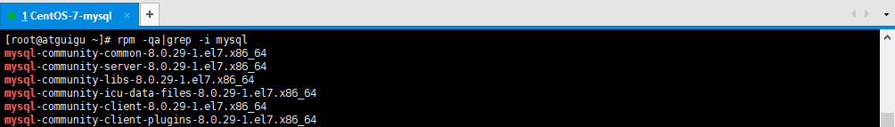
3.卸载已安装程序
卸载上述命令查询出的所有已安装程序 |
4.删除残留文件
查找相关文件
find / -name mysql |

删除上述命令查找出的相关文件
rm -rf /etc/selinux/targeted/active/modules/100/mysql |
5.删除配置文件和日志
rm -f /etc/my.cnf* #如果有的话 |
3.3、检查必要依赖
查询是否安装了如下依赖
rpm -qa|grep libaio |
如果存在，则如下所示：

如果不存在，则需要安装
yum install libaio -y |
注：-y 表示在安装工程中的提示默认为yes
3.4、检查/tmp临时目录权限
由于MySQL安装过程中，会通过MySQL用户在/tmp目录下新建tmp_db文件，所以请给/tmp较大的权限。
权限检查：
ll -a / |

如果权限不是777则授权为777：
chmod -R 777 /tmp |
4、安装
4.1、解压
将安装程序上传至到/opt目录下，并解压：
cd /opt |
4.2、安装
在安装文件目录下执行以下命令**（必须按照顺序执行）：**
rpm -ivh mysql-community-common-8.0.30-1.el7.x86_64.rpm |
4.3、查看是否安装成功
rpm -qa|grep -i mysql |

4.4、查看版本
mysqladmin --version |

4.5、安装后的目录结构
| 路径 | 解释 |
|---|---|
| /usr/bin | 相关命令目录，mysqladmin等 |
/var/lib/mysql/ |
MySQL数据库文件的存放路径 |
| /usr/lib64/mysql/plugin | MySQL |
/var/log/mysqld.log |
MySQL日志路径 |
| /var/run/mysqld/mysqld.pid | 进程pid文件 |
| /var/lib/mysql/mysql.sock | 本地连接时用的套接字文件 |
| /etc/systemd/system/multi-user.target.wants/mysqld.service | 服务启停相关脚本 |
/etc/my.cnf、/usr/share/mysql-8.0 |
MySQL配置文件 |
5、启动
5.1、服务的初始化
初始化数据目录并生成初始密码 |

5.2、服务的启动和停止
启动，安装完MySQL第一次启动服务时，也会同时执行服务的初始化，因此也可以省略5.1 |

5.3、查看进程
进程存在则说明MySQL启动成功 |
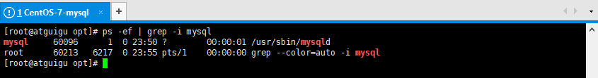
5.4、设置开机启动
查看服务是否自动启动（是：enabled | 否：disabled） |
6、配置密码
6.1、查找初始密码
mysql安装完成之后，在/var/log/mysqld.log文件中给root生成了一个默认密码。通过下面的方式找到root默认密码，然后登录mysql。 |

6.2、登录MySQL客户端
mysql -uroot -p |

6.3、修改密码
因为初始密码只是一个临时密码，默认只可以登录，无法做其他操作，因此我们需要重置密码
ALTER USER 'root'@'localhost' IDENTIFIED BY '123456'; |

6.4、忘记root密码
需要的时候参考
在/etc/my.cnf 文件[mysqld]中加上：
skip_grant_tables=1 |
重新启动mysql服务使配置生效：
systemctl restart mysqld |
就可以无需密码登录MySQL客户端
mysql -uroot |
接下来可以执行修改密码的语句重置密码
7、相关问题
（1）远程连接问题
在用SQLyog或Navicat中配置远程连接MySQL数据库时遇到如下报错信息，这是由于MySQL默认不支持远
程连接。

查看系统数据库MySQL中的user表：
USE mysql; |

可以看到root用户的当前主机配置信息为localhost。修改Host为通配符%
Host列指定了允许用户登录所使用的IP：
Host=localhost，表示只能通过本机客户端去访问。Host=%，表示所有IP都有连接权限。
UPDATE user SET Host = '%' WHERE User ='root'; |
注意：在生产环境下不能为了省事将host设置为%，这样做会存在安全问题，可以设置为生产环境IP。
（2）使用SQLyog连接

出现这个原因是MySQL 8 之前的版本中加密规则是mysql_native_password，而在MySQL 8之后，加密规则是caching_sha2_password。
解决方案有两种，一种是升级SQLyog和Navicat（因此，新版SQLyog不会出现此问题），另一种是把MySQL用户登录密码加密规则还原成mysql_native_password。
**解决方法：**Linux下 mysql -uroot -p 登录你的 MySQL 数据库，然后 执行这条SQL：
ALTER USER 'root'@'%' IDENTIFIED WITH mysql_native_password BY '123456'; |
然后再重新配置SQLyog的连接，重新填写密码，则可连接成功了。